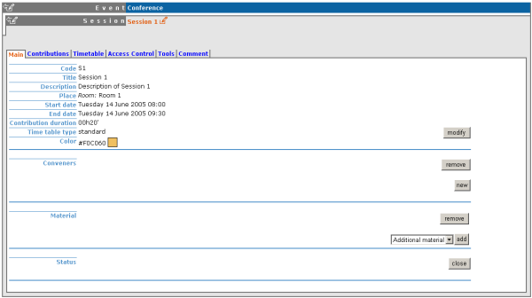
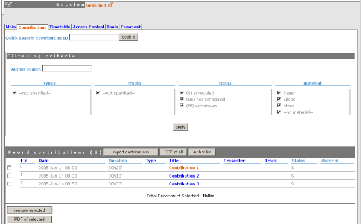
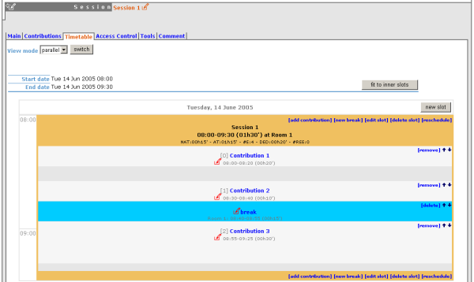
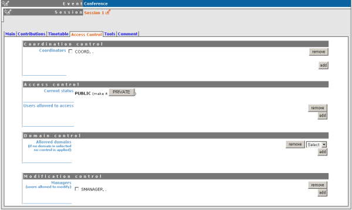
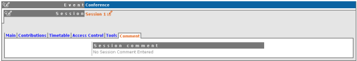

| Prev | Chapter 1. Session Manager Guide | |
| Prev | Chapter 1. Session Manager Guide | |
Once in the session management area you can start managing your session using the following tabs.
This is just a quick start guide for session management, for an indepth explanation please see "Session Management" in the Indico User Guide, section 2.4.5.4 |
The main tab contains all the data about the session itself

Any information, material and people within this main tab apply to the entire session in general.
The contribution tab gives a list of all the contributions associated with your session.

Contributions need to be imported into your session before you can schedule them. By clicking on the contribution name you can then enter the modification area of that contribution.
The timetable tab lets you arrange the scheduling for your session, you can add/edit/delete slots organise when your contributions are going to take place and include breaks within your session.

To change the start times of each entry use the small red pen to the left of the entry's details.
The Access Control tab is the area in which you can set access rights for your session. Please check with your conference manager before changing anything in here as they may wish to set all the access rights themselves.

You can assign users the rights to be session co-ordinators or to be managers alongside yourself, a co-ordinator can schedule contributions and breaks, they can only change slots if they conference manager has given them that right. A session co-ordinator cannot change details of the session itself.
The Tools tab allows you to delete the session and to write minutes for the session.
The Comments tab stores any comments about your session you can view this comment but only the conference manager can modify the comments.
